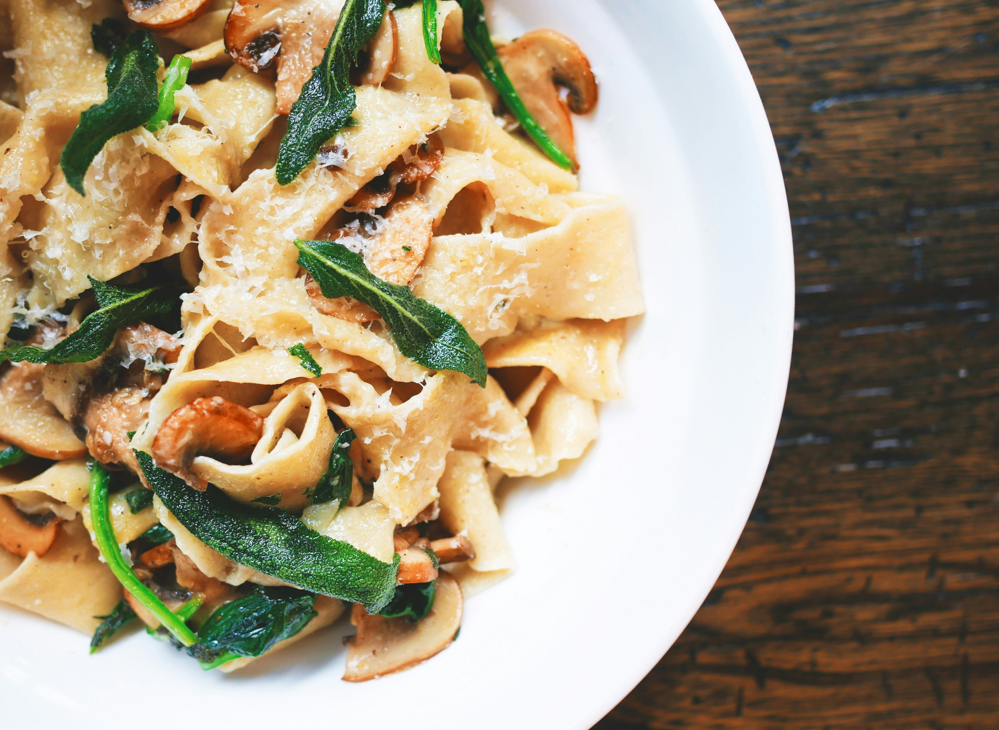

Garlic Butter Shrimp Pasta
Enjoy a delicious Garlic Butter Shrimp Pasta and surprise all your loved ones in any special date. With this recipe you'll make anyone to love your cooking power.
Preparation time
- Preparation Time: 15 minutes
- Cooking Time: 20 minutes
- Total Time: Approximately 35 minutes
Instructions
- Cook the Pasta: Bring a large pot of salted water to a boil. Add the fettuccine pasta and cook according to package instructions until al dente. Once cooked, drain the pasta and set aside. Reserve about 1/2 cup of pasta water for later use.
- Prepare the Shrimp: Pat the peeled and deveined shrimp dry with paper towels. Season the shrimp with salt and pepper. Heat olive oil in a large skillet over medium-high heat. Add minced garlic to the skillet and sauté for about 1 minute until fragrant. Add the seasoned shrimp to the skillet and cook for 2-3 minutes on each side until they turn pink and opaque. Remove the shrimp from the skillet and set aside.
- Make the Garlic Butter Sauce: In the same skillet, melt unsalted butter over medium heat. Add minced garlic and red pepper flakes (if using). Sauté for 1-2 minutes until the garlic is softened but not browned.
- Combine the Pasta and Shrimp: Return the cooked pasta to the skillet with the garlic butter sauce. Toss well to coat the pasta evenly with the sauce.If the pasta seems dry, add some of the reserved pasta water, a little at a time, until you reach your desired consistency.
- Add the Shrimp and Finish: Add the cooked shrimp back to the skillet with the pasta. Sprinkle chopped fresh parsley and grated Parmesan cheese over the pasta. Sprinkle chopped fresh parsley and grated Parmesan cheese over the pasta. Toss everything together until the shrimp are heated through and the cheese is melted. Season with additional salt and pepper to taste.
- Serve: Divide the garlic butter shrimp pasta among serving plates or bowls. Garnish with extra parsley and Parmesan cheese if desired. Serve hot and enjoy!
Ingredients
- 1 pound (450g) large shrimp, peeled and deveined
- 2 tablespoons olive oil
- 4 cloves garlic, minced
- Salt and pepper to taste
- 12 ounces (340g) fettuccine pasta
- 4 tablespoons unsalted butter
- 4 cloves garlic, minced
- 1/4 cup chopped fresh parsley
- 1/2 teaspoon red pepper flakes (optional)
- 1/4 cup grated Parmesan cheese
Nutrition
| Calories | 277kcal |
| Carbs | 0g |
| Protein | 20g |
| Fat | 22g |
More Recipes

Simple Omelette
Enjoy a delicious Simple Omelette and surprise all your loved ones in any special date.

Classic Lasagna
Enjoy a delicious Classic Lasagna and surprise all your loved ones in any special date.
Vegetable Stir-Fry
Enjoy a delicious Vegetable Stir-Fry and surprise all your loved ones in any special date.